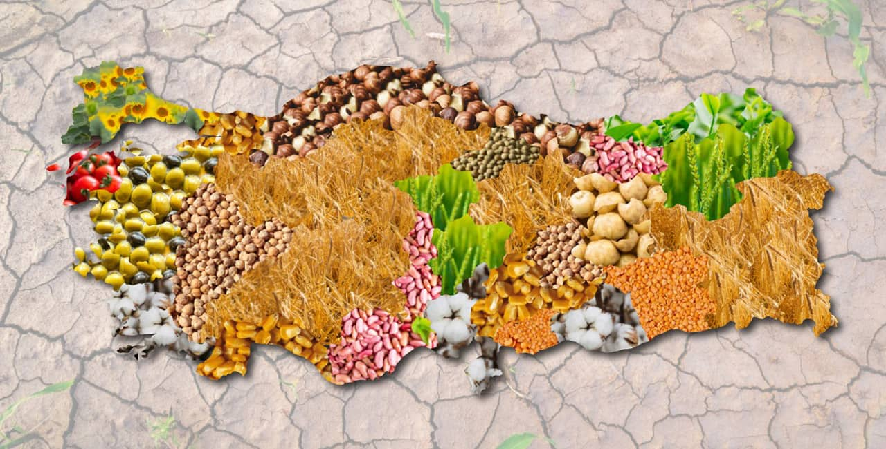

Eski topraklar diye tabir ettiğimiz altmış yaş üstü insanlar yeni biriyle tanıştığı zaman "burcun ne" diye sormazlar. Memleket neresi diye sorarlar. Çünkü burçlar insanların karakter özelliklerini yansıtmaz. Ancak memleketin coğrafi ve toplumsal yapısı karakteri belirginleştiren önemli bir etkendir. Sizleri daha fazla sözlerim ile meşgul etmeden memleket karakterine başlayalım..